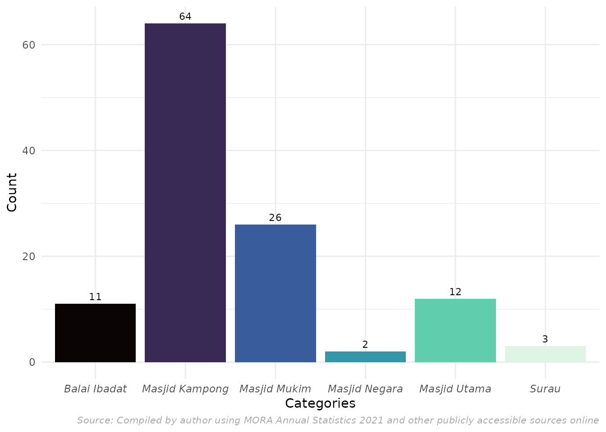
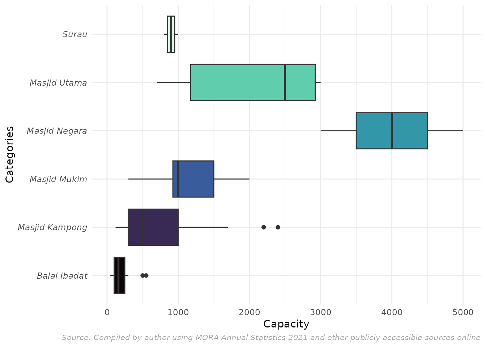
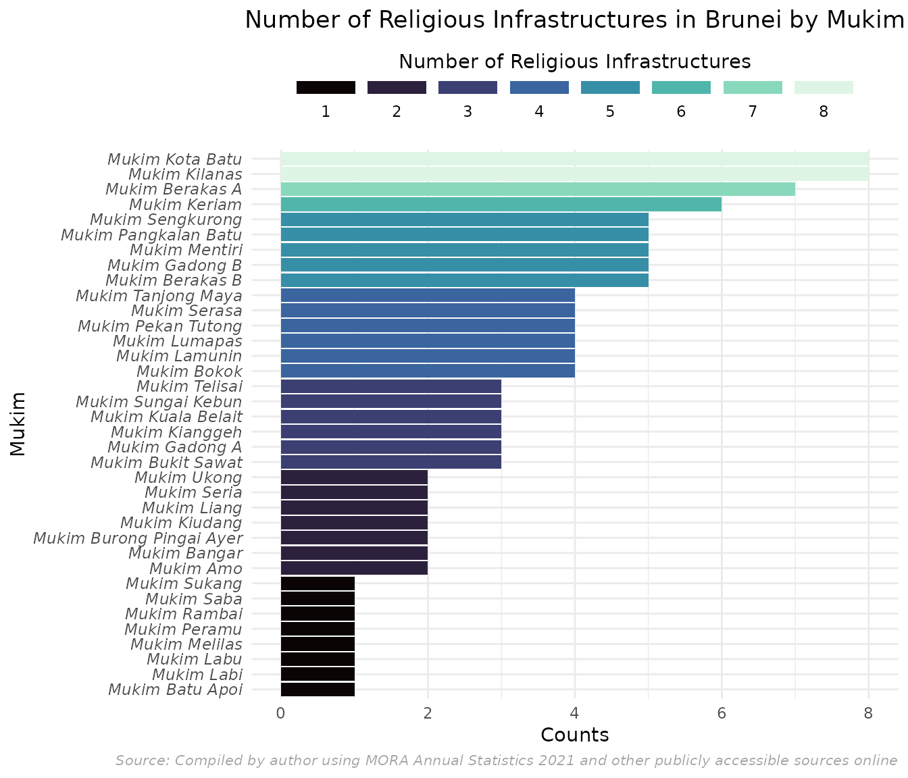

Analysis of Religious Infrastructure in Brunei Darussalam
This vignette introduces the masjid dataset included in
the bruneimap package, which provides spatial data for
masjid-masjid (mosques) across Brunei. The dataset includes essential
information such as the name, geographic coordinates (latitude and
longitude), kampong/mukim/district of each masjid, capacity, years it
was officiated, used and completed, as well as the type and category of
each masjid.
library(tidyverse)
#> ── Attaching core tidyverse packages ──────────────────────── tidyverse 2.0.0 ──
#> ✔ dplyr 1.1.4 ✔ readr 2.1.5
#> ✔ forcats 1.0.0 ✔ stringr 1.5.1
#> ✔ ggplot2 3.5.1 ✔ tibble 3.2.1
#> ✔ lubridate 1.9.4 ✔ tidyr 1.3.1
#> ✔ purrr 1.0.2
#> ── Conflicts ────────────────────────────────────────── tidyverse_conflicts() ──
#> ✖ dplyr::filter() masks stats::filter()
#> ✖ dplyr::lag() masks stats::lag()
#> ℹ Use the conflicted package (<http://conflicted.r-lib.org/>) to force all conflicts to become errors
library(bruneimap)
#> Loading required package: sf
#> Linking to GEOS 3.12.1, GDAL 3.8.4, PROJ 9.4.0; sf_use_s2() is TRUE
library(sf)
library(ggplot2)
library(viridisLite)
glimpse(masjid)
#> Rows: 121
#> Columns: 13
#> $ name <chr> "Balai Ibadat Kg. Melilas", "Balai Ibadat Kg. Merangking", …
#> $ kampong <chr> "Kg. Melilas", "Kg. Merangking", "Kg. Sukang", "Kg. Long Ma…
#> $ mukim <chr> "Mukim Melilas", "Mukim Bukit Sawat", "Mukim Sukang", "Muki…
#> $ district <chr> "Belait", "Belait", "Belait", "Tutong", "Brunei-Muara", "Br…
#> $ latitude <dbl> 114.6605, 114.5780, 114.6246, 114.6353, 114.8957, 114.9425,…
#> $ longitude <dbl> 4.257784, 4.522569, 4.311368, 4.560621, 4.900171, 4.881970,…
#> $ officiated <dbl> NA, NA, NA, 1998, NA, NA, NA, NA, NA, NA, NA, NA, 1979, NA,…
#> $ used <dbl> NA, NA, NA, NA, NA, NA, NA, NA, NA, 1994, NA, NA, NA, NA, N…
#> $ completed <dbl> 1994, NA, 1994, NA, 1988, NA, 1989, NA, NA, NA, 1994, 1992,…
#> $ capacity <dbl> 40, 180, 40, 150, 550, 100, 500, 300, 100, 150, 160, 120, 2…
#> $ type <chr> "balai ibadat", "balai ibadat", "balai ibadat", "balai ibad…
#> $ category <chr> "Balai Ibadat", "Balai Ibadat", "Balai Ibadat", "Balai Ibad…
#> $ notes <chr> NA, NA, NA, NA, NA, NA, NA, NA, NA, NA, NA, NA, NA, NA, NA,…According to Ministry of Religious Affairs, masjid in Brunei are divided into different categories: Masjid Kampong (village mosques), Masjid Mukim (sub-district mosques), Masjid Utama (main mosques), Masjid Negara (national mosques). It also includes Surau and 'Balai Ibadat'
Below is a bar chart of the different religious infrastructures categories across Brunei:
masjid |>
group_by(category) |>
summarise(count = n()) |>
ggplot(aes(x = category, y = count, fill = category)) +
geom_bar(stat = "identity") +
geom_text(aes(label = count), vjust = -0.5, size = 3) +
labs(x = "Categories",
y = "Count",
fill = "Types",
caption = "Source: MORA Annual Statistics (2021)") +
theme_minimal() +
scale_fill_viridis_d(option = "mako") +
theme(legend.position = "none",
plot.title = element_text(hjust = 0.5),
axis.text.x = element_text(face = "italic"))
Here, we can see that in total there are 104 Masjid, 5 Surau and 12 Balai Ibadat inside the dataset. Meanwhile inside the masjid category, there are 64 Masjid Kampong, 26 Masjid Mukim, 12 Masjid Utama & 2 Masjid Negara. Furthermore, since the dataset includes the capacity of each infrastructure, we can see how many people can fit in each of the categories mentioned implying the size of each infrastructure.
masjid |>
ggplot(aes(x = capacity, y = category, fill = category)) +
geom_boxplot() +
labs(x = "Capacity",
y = "Categories",
fill = "Types",
caption = "Source: MORA Annual Statistics (2021)") +
theme_minimal() +
scale_fill_viridis_d(option = "mako") +
theme(legend.position = "none",
plot.title = element_text(hjust = 0),
axis.text.y = element_text(face = "italic"))
#> Warning: Removed 1 row containing non-finite outside the scale range
#> (`stat_boxplot()`).
From this box plot, we can see that Masjid Negara is the biggest in capacity, followed by Masjid Utama, Masjid Mukim and Masjid Kampong. While Balai Ibadat holds the lowest capacity among all. The minimum and maximum capacity for Masjid Kampong is 120 and 2400, for Masjid Mukim is 300 and 2000, for Masjid Utama is 700 and 3000, for Masjid Negara is 3000 and 5000, for Surau is 40 and 1000 and for Balai Ibadat is 40 and 550. Outliers can be seen for 'Masjid Kampong' where Masjid Suri Seri Begawan Raja Pengiran Anak Damit in Kg. Madang can accomodate 2400 people inside whereas the others in the same category typically have the capacity of 1700 & below.
top_5_biggest <- masjid |>
arrange(desc(`capacity`), na.rm = TRUE) |>
head(5) |>
select(name, kampong, mukim,category, `capacity`)
top_5_biggest
#> # A tibble: 5 × 5
#> name kampong mukim category capacity
#> <chr> <chr> <chr> <chr> <dbl>
#> 1 Masjid Jame' 'Asr Hassanil Bolkiah Kg. Kiarong Mukim G… Masjid … 5000
#> 2 Masjid Omar Ali Saifuddien Pusat Bandar Mukim K… Masjid … 3000
#> 3 Masjid Hassanal Bolkiah Kg. Mentiri Mukim M… Masjid … 3000
#> 4 Masjid Sultan Sharif Ali Kg. Sengkurong A Mukim S… Masjid … 3000
#> 5 Masjid Mohamed Bolkiah Kg. Serusop Mukim B… Masjid … 3000The top 5 biggest by capacity are Jame' 'Asr Hassanil Bolkiah in Kg. Kiarong with 5000 capacity. Meanwhile, Masjid Omar Ali Saifuddien in Pusat Bandar, Masjid Hassanal Bolkiah in Kg. Mentiri, Masjid Sultan Sharif Ali in Kg. Sengkurong A and Masjid Mohamed Bolkiah in Kg. Serusop all can accomodate up to 3000 people.
top_5_smallest <- masjid |>
arrange(`capacity`, na.rm = TRUE) |>
head(5) |>
select(name, kampong, mukim, category, `capacity`)
top_5_smallest
#> # A tibble: 5 × 5
#> name kampong mukim category capacity
#> <chr> <chr> <chr> <chr> <dbl>
#> 1 Balai Ibadat Kg. Melilas Kg. Melilas Mukim Mel… Balai I… 40
#> 2 Balai Ibadat Kg. Sukang Kg. Sukang Mukim Suk… Balai I… 40
#> 3 Surau Kg. Mapol Hutan Simpan Bukit Ladan Mukim Ram… Surau 40
#> 4 Surau Kg. Belabau Kg. Belabau Mukim Ram… Surau 40
#> 5 Balai Ibadat Kg. Peramu Kg. Peramu Mukim Per… Balai I… 100Whereas, the top 5 smallest by capacity are Balai Ibadat Kg. Melilas, Balai Ibadat Kg. Sukang, Surau Kg. Mapol in Hutan Simpan Bukit Ladan, Surau Kg. Belabau in Kg. Belabau can accomodate 40 people while Balai Ibadat Kg. Peramu in Kg. Peramu can accomdate 100 people.
The bar chart below illustrates the number of masjid, surau, and balai ibadat by mukim . Mukim Kota Batu stand out with the highest count of 8 religious infrastructures as it is located near to Bandar Seri Begawan, the capital of Brunei Darussalam.
masjid |>
group_by(mukim) |>
summarise(n = n()) |>
ggplot(aes(x = n, y = reorder(mukim, n), fill = n)) +
geom_bar(stat = "identity") +
scale_fill_viridis_c(
option = "mako",
breaks = seq(0, 8, by = 1),
name = "Number of Religious Infrastructures",
guide = guide_legend(
keyheight = unit(3, units = "mm"),
keywidth = unit(12, units = "mm"),
label.position = "bottom",
title.position = 'top',
nrow = 1
)
) +
labs(
title = "Number of Religious Infrastructures in Brunei by Mukim",
x = "Counts",
y = "Mukim",
fill = "Number of Religious Infrastructures",
caption = "Source: MORA Annual Statistics (2021)"
) +
theme_minimal() +
theme(
legend.position = "top",
plot.title = element_text(hjust = 0.5),
legend.title = element_text(hjust = 0.5),
axis.text.y = element_text(face = "italic")
)
Using the **sf** package, we can visualize the geographic distribution of religious infrastructures across Brunei by Mukim. The map highlights areas with dense concentrations of mosques, such as Brunei-Muara, while identifying sparsely populated regions with fewer or no religious infrastructures. There are 3 mukim which does not have a record of religious infrastructure where one of them is in Mukim Kuala Balai where the population recorded is 16 (2021) which makes sense. However, the other 2 mukim with no religious infrastructure is located in Brunei Muara in Mukim Tamoi and Mukim Sungai Kedayan. This is because the area is considered small and there are available mosques nearby or around the border of the mukim.
# Group by mukim and count the number of mosques in each mukim
masjid_by_mukim <- masjid |>
group_by(mukim) |>
summarise(n = n()) # Count the number of mosques per mukim
# Join the masjid count with the mukim geometries in mkm_sf
mkm_sf <- mkm_sf |>
left_join(masjid_by_mukim, by = "mukim") # Joining by mukim
# Plot the number of mosques in each mukim
ggplot(data = mkm_sf) +
geom_sf(aes(fill = n)) +
coord_sf() +
scale_fill_viridis_c(
option = "mako",
breaks = seq(0, 8, by = 1),
name = "Number of Religious Infrastructures",
guide = guide_legend(
keyheight = unit(3, units = "mm"),
keywidth = unit(12, units = "mm"),
label.position = "bottom",
title.position = 'top',
nrow = 1
)
) +
labs(
title = "Distribution of Religious Infrastructures in Brunei by Mukim",
caption = "Source: MORA Annual Statistics (2021)"
) +
theme_minimal() +
theme(
legend.position = "top",
plot.title = element_text(hjust = 0.5),
legend.title = element_text(hjust = 0.5)
)Furthermore, since we have the longtitude and latitude coordiantes of the infrastructures, we can visualise the locations of each of them across Brunei. Below is an example where the masjids are overlaid on Brunei’s mukim boundaries:
ggplot() +
geom_sf(data = mkm_sf, fill = NA) + # change data to kpg_sf to view bordered by kampong
geom_point(data = masjid, aes(latitude, longitude, color = as.factor(category)),
size = 2, alpha = 1) +
scale_color_viridis_d(option = "mako",
name = "Category") +
coord_sf() +
labs(
title = "Distribution of Religious Infrastructures in Brunei",
caption = "Source: MORA Annual Statistics (2021)",
x = "Latitude",
y = "Longitude"
) +
theme_minimal() +
theme(
legend.position = "right",
plot.title = element_text(hjust = 0.5, size = 16),
plot.caption = element_text(hjust = 1, size = 10)
)
#> Warning: Removed 24 rows containing missing values or values outside the scale range
#> (`geom_point()`).Conclusion
This vignette demonstrates the use of bruneimap for analyzing and visualizing religious infrastructures in Brunei. By leveraging spatial and demographic data, we can identify trends and gaps in infrastructure distribution, supporting data-driven decision-making for community planning.
For more details, refer to the bruneimap documentation or the source datasets used in this vignette.